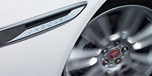
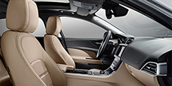

01프런트LED
XE의 J 블레이드 LED로 둘러싸인 헤드램프

02에어로다이나믹스
XE의 형태는 공기역학적 효율 및 안정성

03럭셔리패시아
운전자의 몸을 감싸는 XE 럭셔리 시트

04디자인디테일
나만의 유니크한 스타일과 감각의 XE의 실내
05프런트LED
XE의 J 블레이드 LED로 둘러싸인 헤드램프
06에어로다이나믹스
XE의 형태는 공기역학적 효율 및 안정성
07럭셔리패시아
운전자의 몸을 감싸는 XE 럭셔리 시트
08디자인디테일
나만의 유니크한 스타일과 감각의 XE의 실내